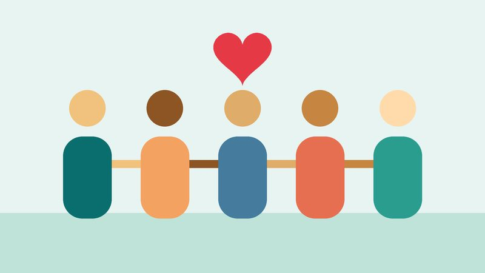

Missão
Transformar realidades por meio de projetos sociais e do trabalho voluntário.
Apoiamos famílias em situação de vulnerabilidade social com educação, alimentação e cidadania.
A ONG Mãos Solidárias é uma organização sem fins lucrativos que apoia famílias em situação de vulnerabilidade social, promovendo educação, alimentação e cidadania.
Campanha do agasalho: recebemos doações de roupas e cobertores em nossa sede.

Transformar realidades por meio de projetos sociais e do trabalho voluntário.
Ser referência regional em ações de impacto social sustentável.
Solidariedade, transparência, respeito e compromisso com a comunidade.
Endereço: Rua da Esperança, 123 - Centro, São Paulo/SP
Telefone: (11) 0000-0000
E-mail: contato@maossolidarias.org.br